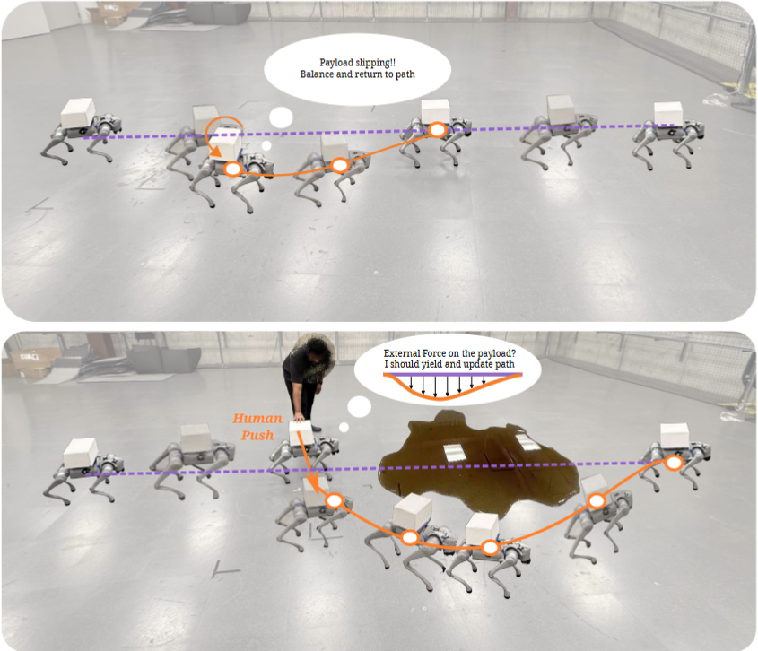

Quadruped robots are increasingly expected to carry objects while moving through human environments. But what happens when a person interacts directly with the payload rather than with the robot? If the payload is unrestrained, the robot must distinguish intentional external interactions from ordinary payload motion, while still keeping the load balanced and maintaining stable locomotion. How can a quadruped infer and compliantly respond to such interactions using only onboard measurements? In this work, we develop a force-aware locomotion framework that treats payload interactions as commands that shape the motion of the combined robot-payload system. Our approach separates the learning of force-aware locomotion and force estimation on an unrestrained payload. We combine a compliant load-carrying policy with a causal force estimator, trained through estimator-in-the-loop data aggregation and finetuning, to predict interactions from onboard robot measurements. Our simulations and real-world experiments show that the resulting controller can maintain stable payload-carrying locomotion, yield compliantly to external interactions, and use the inferred force to support human-guided changes in the robot’s trajectory.